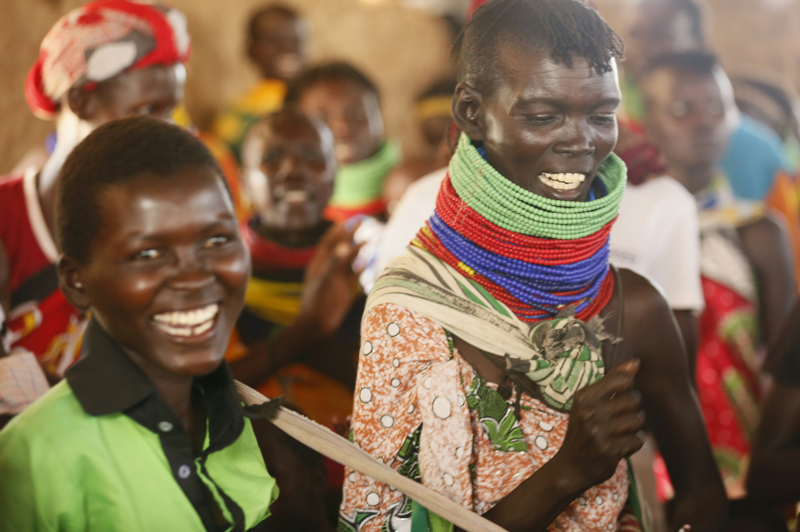

COMMUNITY
SOCIAL
PROTECTION
Bridging the gap between vulnerable households and the services they need — before a crisis becomes a catastrophe.
No One Left Behind
Many households in Mathare are unaware of the social services available to them. Our outreach program connects the most vulnerable to support systems — before hardship becomes irreversible.
In many informal settlements, households face deep and persistent vulnerabilities driven by poverty, unemployment, limited access to essential services, and weak social safety nets. Families often struggle to meet basic needs such as food, healthcare, education, and shelter.
These challenges are further compounded by limited awareness of available government and support services, making it difficult for vulnerable individuals to access the help they need in time.
Our Community Social Protection Outreach Program responds to these realities by strengthening access to essential social services and linking vulnerable households to available support systems.

Vulnerability Without a Safety Net
In many informal settlements, households face deep and persistent vulnerabilities driven by poverty, unemployment, limited access to essential services, and weak social safety nets. Families often struggle to meet basic needs such as food, healthcare, education, and shelter, leaving them exposed to shocks like illness, loss of income, or emergencies. These challenges are further compounded by limited awareness of available government and support services, making it difficult for vulnerable individuals to access the help they need in time.

Outreach, Referral, and Community Capacity
Our Community Social Protection Outreach Program responds to these realities by strengthening access to essential social services and linking vulnerable households to available support systems. The program works at the community level to identify at-risk individuals and families, raise awareness about social protection services, and facilitate referrals to relevant government and partner programs.
Through community outreach activities, we provide information on critical services such as health insurance, education support, child protection, legal aid, and livelihood assistance. We also work closely with local leaders, community health volunteers, and social workers to ensure that vulnerable households are not left behind.
In addition, the program builds community capacity by empowering residents with knowledge of their rights and available social safety nets, enabling them to advocate for themselves and access services more effectively.
By bridging the gap between vulnerable communities and existing support systems, this program strengthens resilience, reduces inequality, and promotes dignity and inclusion for those most at risk.
Expected Outcomes
When people know their rights and can access support, entire communities become more resilient.
Service Linkage
Vulnerable households are connected to health, education, legal, and livelihood services they were previously unaware of.
Community Outreach
Door-to-door and community-level activities ensure the most marginalised are identified and supported first.
Rights Awareness
Residents understand their rights and the services available to them, enabling self-advocacy and informed decision-making.
Health Access
Families are enrolled in health insurance and connected to healthcare services, reducing vulnerability to illness-related crises.
Child Protection
At-risk children are identified early and connected to protective services, education support, and safe environments.
Reduced Inequality
Systemic access to social protection reduces the gap between the most vulnerable and the wider community.
Help Us Reach
Every Household
Fund community outreach workers and referral networks that connect Mathare's most vulnerable to the support they deserve.